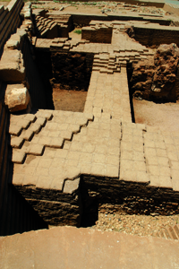
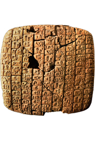
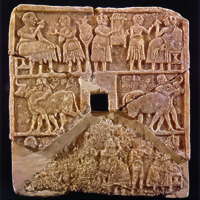
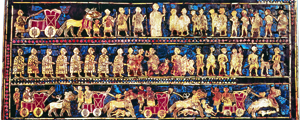
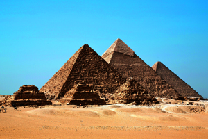

Lezione 2  Le antiche civiltà del Mediterraneo
Le antiche civiltà del Mediterraneo

-
80
540
-
120
550
-
120
600
-
180
640
-
280
440
-
240
420

EBLA
Soltanto nel 1964 gli archeologi scoprono e iniziano a scavare le grandi rovine di Ebla. Dagli scavi, tuttora in corso, continuano ad emergere reperti molto importanti; di particolare rilievo è il patrimonio di tavolette con iscrizioni provenienti dagli Archivi Reali. La città di Ebla è un esempio di come anche al di fuori dell'area mesopotamica centrale esistessero civiltà sedentarie ed evolute. Il suo momento di splendore fu nella seconda metà del III millennio a.C. e fu dovuto principalmente alla posizione strategica, che rendeva Ebla un crocevia dei commerci fra penisola anatolica, Mesopotamia ed Egitto.
SIRIA
Questa tavoletta incisa in alfabeto cuneiforme, databile alla metà del III millennio a.C., contiene una lettera diplomatica indirizzata ad un sovrano di Ebla. 
NIPPUR
Questa lastra che raffigura una scena di banchetto accompagnata da musicisti, proveniente da Nippur, in Iraq, è una splendida testimonianza della raffinatezza della civiltà sumera.
UR
Lo stendardo di Ur, bellissimo manufatto sumero in mosaico e legno, presenta due facce: una dedicata alla pace e l’altra alla guerra. In questo particolare vediamo un carro militare trainato da cavalli e montato da soldati, con una faretra piena di lance. La storia della Mesopotamia può apparire a prima vista un semplice alternarsi dell'egemonia di popoli differenti, provenienti dall'esterno. Non bisogna dimenticare però che le civiltà conquistate non sparivano nel nulla, ma influenzavano in modo determinante gli invasori. Gli accadi, per esempio, prima di creare il loro vasto Impero si integrarono con la cultura sumera, tanto che a posteriori non è facile distinguere nettamente le due civiltà.
EGITTO
Le tre piramidi di Cheope, Khefren e Mykerinos: giganteschi monumenti funerari dei faraoni, sono divenute il simbolo per eccellenza della civiltà egizia.MENFI
La piramide di Cheope, costruita intorno al 2570 a.C., è la più grande e famosa piramide d'Egitto ed è l'unica delle sette meraviglie del mondo antico giunta fino a noi. La piramide aveva la funzione di monumento funebre destinato al faraone; per costruirla furono necessari vent'anni di lavoro da parte di oltre centomila uomini.